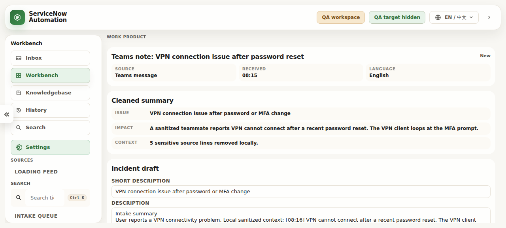

Unstructured user explanation
Service Desk Workflow Cockpit
A local-first desktop preview for turning messy support intake into cleaner incident drafts, guided review, and safer handoff.
Start where service desk work actually begins
Unstructured user explanation
Chat notes and missing context
Manual notes after a call
Operator edits before review
Symptoms, impact, affected tools, troubleshooting evidence, and the next human decision in one readable block.
The result appears before the guided path
The most important output is not buried at the bottom. It is placed directly after the cleaned summary so the operator can inspect it immediately.

Local KB recommendations
Readable recommendation cards show confidence, matched evidence, support group, and routing reason.
VPN fails after MFA prompt · user impact confirmed · Windows endpoint context available.
End User Computing / Identity Access — with a short routing reason and handling steps.
Human-in-the-loop by design
After a ticket is opened
Choose fill now or defer into a pending queue. No Graph or Excel Web writeback.
Operator-visible action for the current ticket record.
Keeps the monthly workflow honest without Microsoft Graph or Excel Web writeback.
Downloadable Windows test preview with bilingual README, release notes, screenshots, and verified public assets.
Development vision
Browser-assisted field preparation only after explicit approval.
More transparent evidence, confidence, and escalation reasoning.
Clear packages, checksums, test steps, and privacy gates for each build.
ServiceNow Automation Workbench